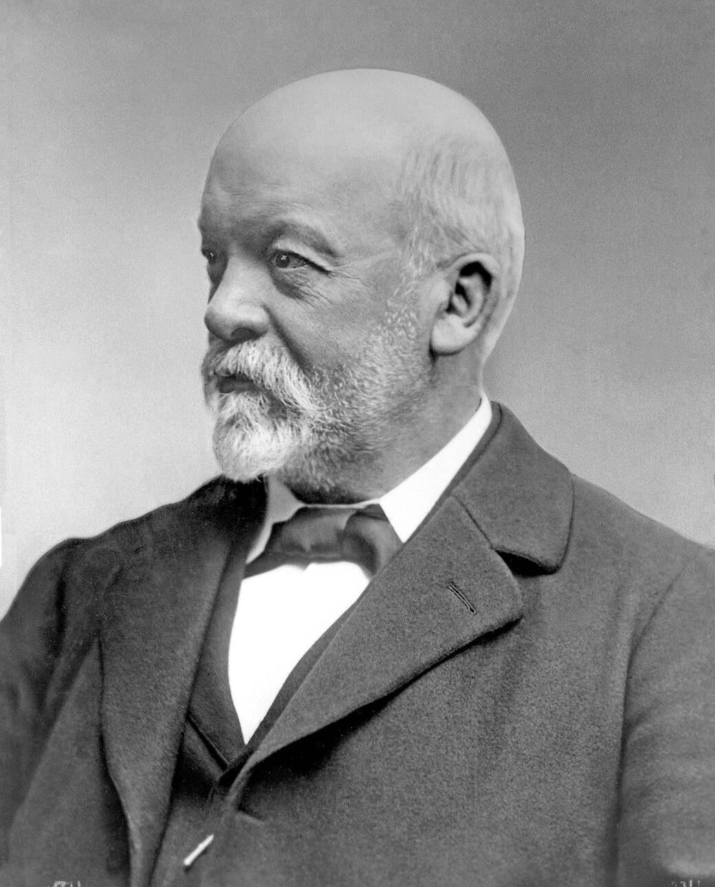
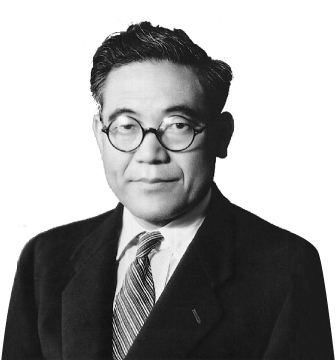
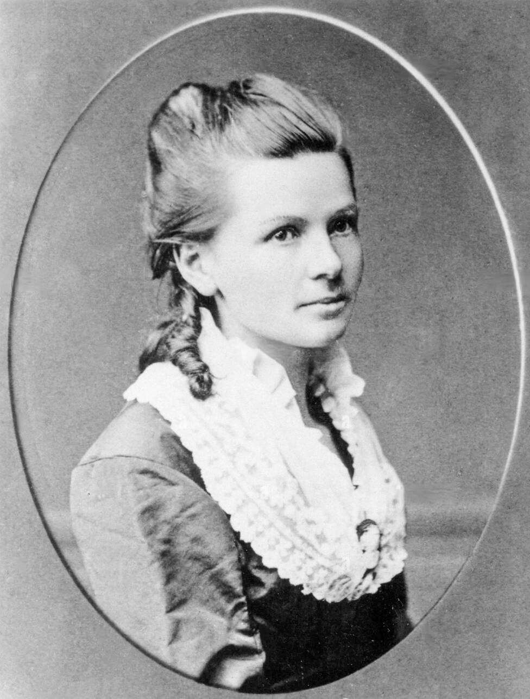
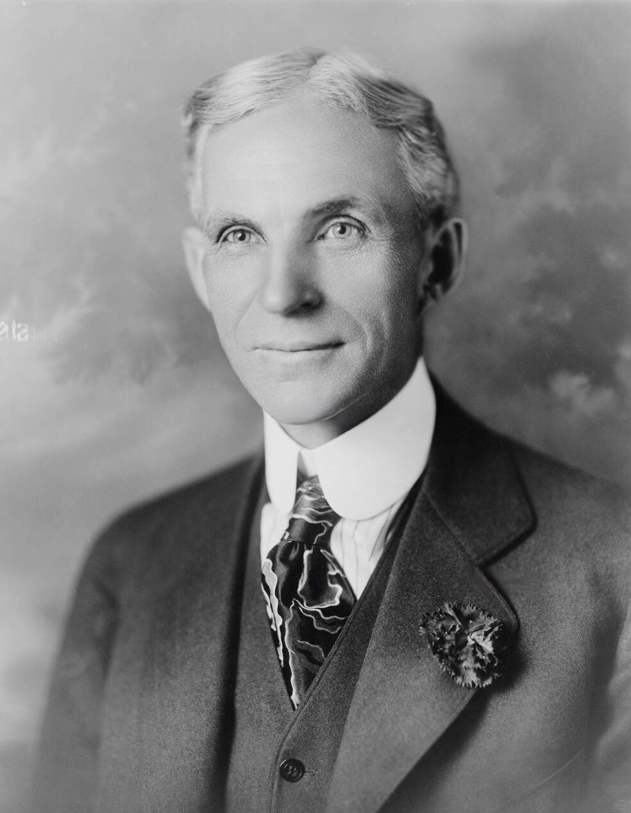
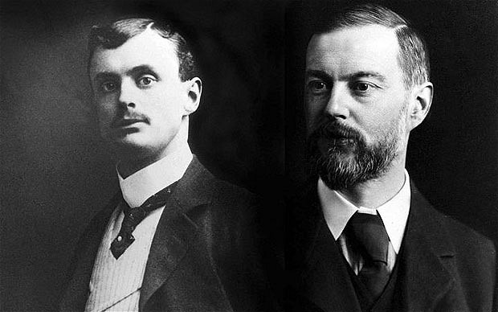
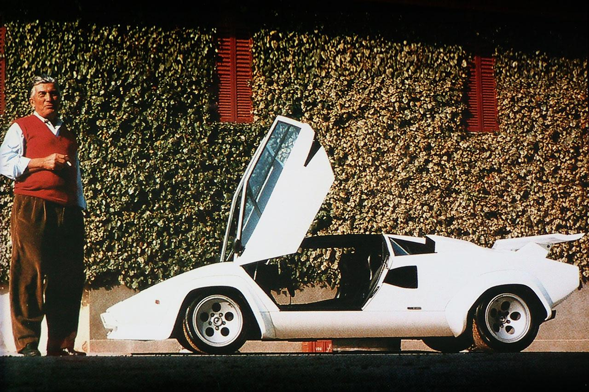

THEIR INQUISITIVENESS, COURAGE AND DISCOVERIES BROUGHT US THUS FAR
Karl Friedrich Benz [1844-1929]
Popularly regarded as the "father of the automobile industry", Karl Friedrich Benz born Karl Friedrich Michael Vaillant and later renamed after his father successfully left an indelible impact in the automobile industry. Despite growing up in poverty, he was able to gain formal education which helped him in the development of multiple inventions. As he progressed through life he found time to work on his hobby-creating a "horseless carriage" which he named Benz Patent-Motorwagen.
Read more

Gottlieb Wilhelm Daimler [1834-1900]
At the age of 13, Daimler knew he wanted to become an engineer. A friend of Wilhelm Maybach, the pair worked on the fabrication of different high speed engines like the Dream engine. Daimler and Karl Benz were never really on good terms. Daimler's company(DMG) even sued Benz's Benz & Cie. and won. Years after Daimlers death the two companies did cooperate in many ways and ended up merging together to create the formidable Mercedes-Benz.
Read more

Kiichiro Toyoda [1894-1952]
His family was a big name in the automatic loom business but Kiichiro wanted to steer away and enter into the automobile line which was considered a risk. Before his father, Sakichi Toyoda, died, he encouraged his son to follow his dream and pursue automobile manufacturing. He instituted the spelling of the automobile company away from the family name to famously garner good luck. Sadly, Toyoda passed away before he could witness the success of his company.
Read more

Bertha Benz [1849-1944]
On the 5th of August in 1888, Bertha became the first person to drive an internal-combustion-engined automobile over a long distance. Before marriage she used her dowry to invest in Karl's failing iron construction company and journeyed on this trip to prove to her husband the financial success of his invention. In 1925 Karl Benz wrote the following in his memoirs: "Only one person remained with me in the small ship of life when it seemed destined to sink. That was my wife. Bravely and resolutely she set the new sails of hope."
Read more

Henry Ford [1863-1947]
An American businessman and industrialist who seemed to have the common man in mind. He pioneered manufacturing of affordable automobiles through the Fordism system; a system that launched the mass production and sale of affordable automotives to the public. Leaving home to work as a machinist was a step in the right direction for Ford as it led to significant developments throughout his life.
Read more

Sir Frederick Henry Royce [1863-1933] Charles Stewart Rolls [1877-1910]
Think Luxury and the name pops up a million times. Nothing beats the Rolls Royce. Two men brought about this development: Henry Royce who was passionate about all things mechanical and soon started developing automobiles and Charles Rolls who was a pioneer aviator. Rolls also put much effort into publicising the quietness and smoothness of Rolls-Royce which contributed to the company's fame.
Read more

Ferruccio Lamborghini [1816-1993]
An Italian automobile designer, soldier, inventor, mechanic, engineer, winemaker, industrialist, and businessman. Lamborghini was also an automobile enthusiast and started out my building tractors which gave him enough to acquire fast cars like the Ferrari. It was his annoyance with some inefficiencies with his Ferrari's noisy engine and inferior clutches plus his dismissed misgivings by Enzo Ferrari that caused him to delve into supercars.
Read more